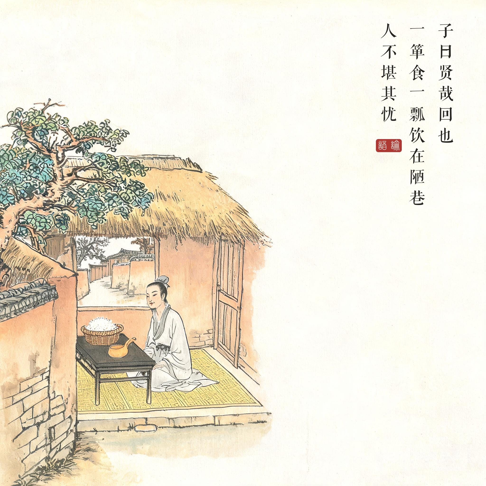
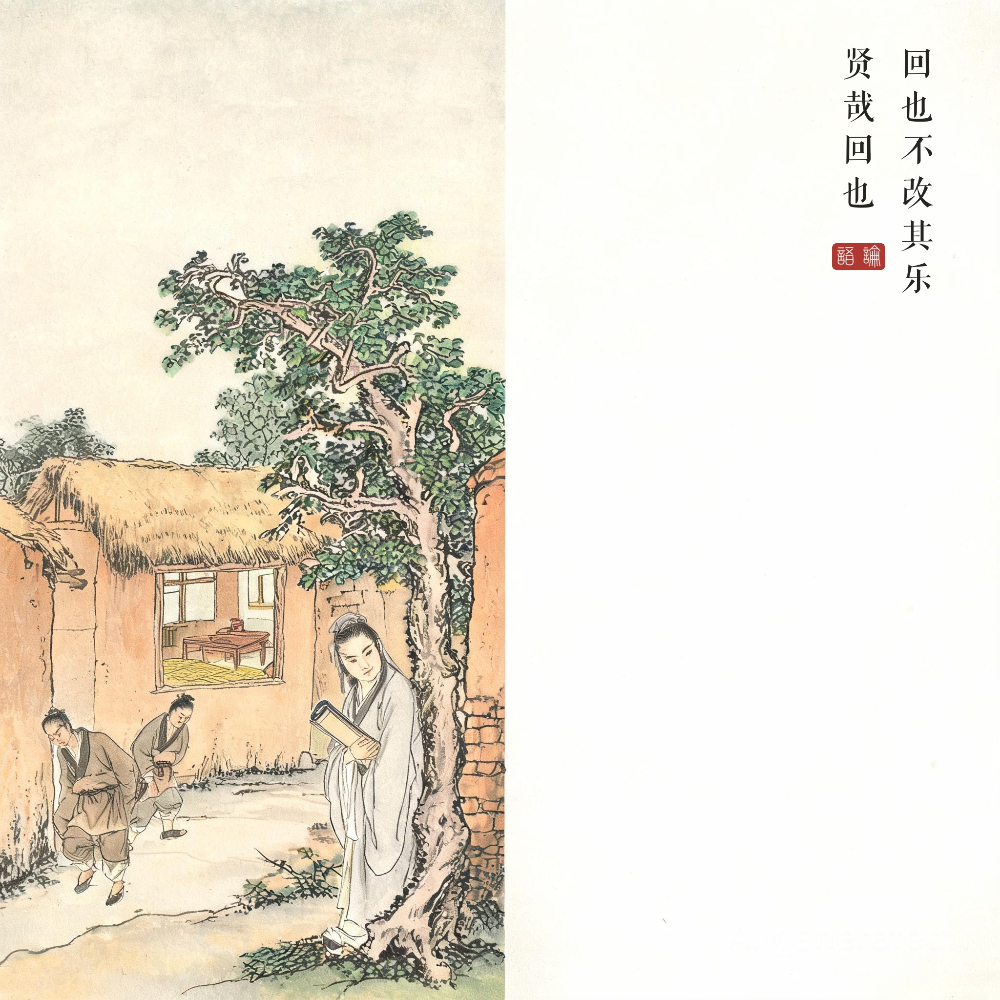
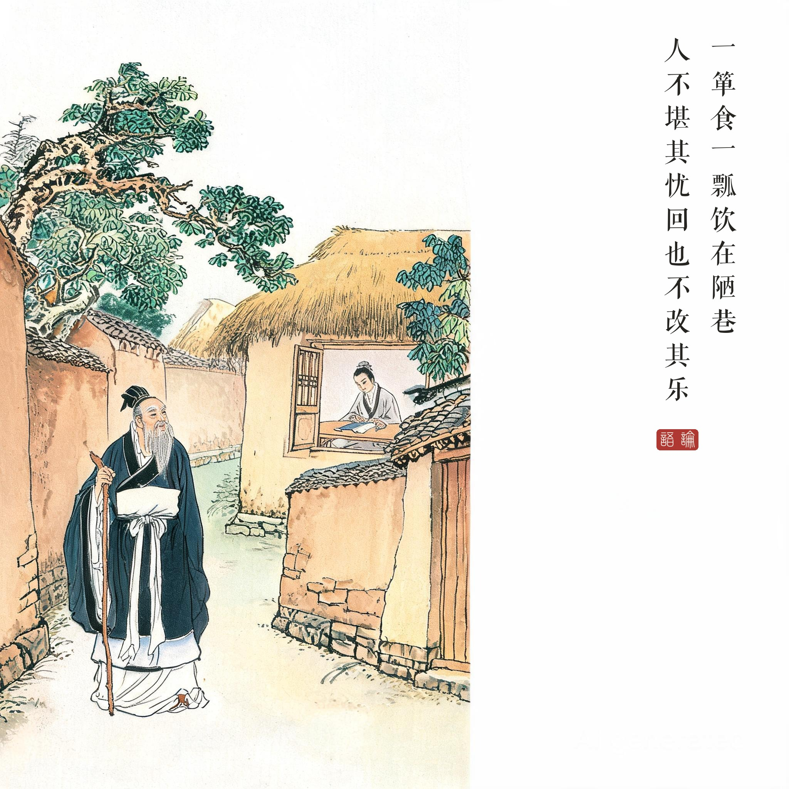

《论语 · 雍也第六》。颜回，字子渊，鲁人，孔子最器重的弟子，早卒，年四十（一说三十二）。
（据 daizhigev20《论语》底本节录，题款诸句见组画清单）
孔子叹道："贤德啊，颜回！一筐饭、一瓢水、住在陋巷里，别人都受不了这种忧愁，颜回却不改他的快乐。贤德啊，颜回！"
《论语》记颜回仅十章，而孔子两次叹"贤哉回也"。这一章定下了后世"孔颜之乐"的命题：宋儒周敦颐教二程，每令寻"颜回箪瓢之乐，所乐何事"——乐的不是贫，而是心中之道的充盈。
为什么偏偏是颜回。同篇孔子问子贡："你与颜回谁强？"子贡答："赐也何敢望回——回也闻一以知十。"颜回之贤在闻一知十、不迁怒、不贰过，而孔子最爱的还是这一章的"不改其乐"：境遇夺不走他心里的东西。
陋巷在中国文化里的位置。后世"陋巷"成为典故地标：曲阜今存颜庙陋巷坊、陋巷井；刘禹锡《陋室铭》"子在陋巷"直用此章。一个人的居所从此成为精神现象——箪瓢不是清苦的勋章，而是自由的证明。
读画小识。第一幅茅屋内：案上一箪一瓢，是全画题眼——器物极简，人极安然；第三幅巷口遥望：夫子拄杖来访的身影与陋巷的清贫并置，"贤哉"的赞叹变成一个凝望的动作，把原文的感叹词画成了画面。